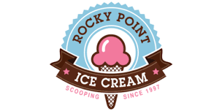
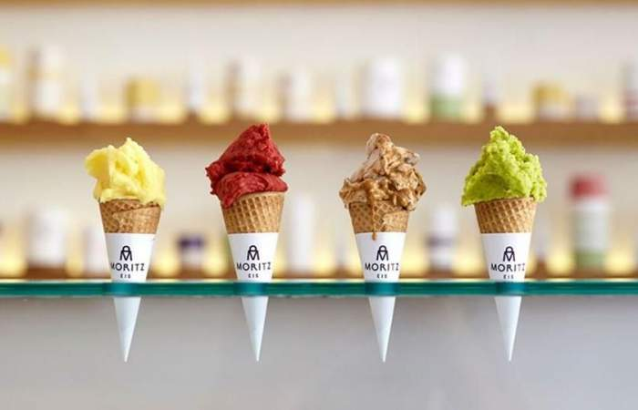

¿Quienes somos?
Heladeria Rocky point donde encontraras los mejores helados de la ciudad establecimiento en el que se comercializan y se sirven helados. Suele constar de un escaparate refrigerado en el que se encuentran clasificados los diferentes tipos o sabores de helados. Generalmente se trata de un establecimiento abierto, o de gran entrada, al que puede accederse de forma sencilla. Heladeria rocky fue fundada desde 1997 y hemos recibido el premio "Gellato" que se lo dan a las mejores heladerias de la ciudad y hasta incluso del pais, visitanos y descubriras variedades de sabores entre nuestro catalogo.
